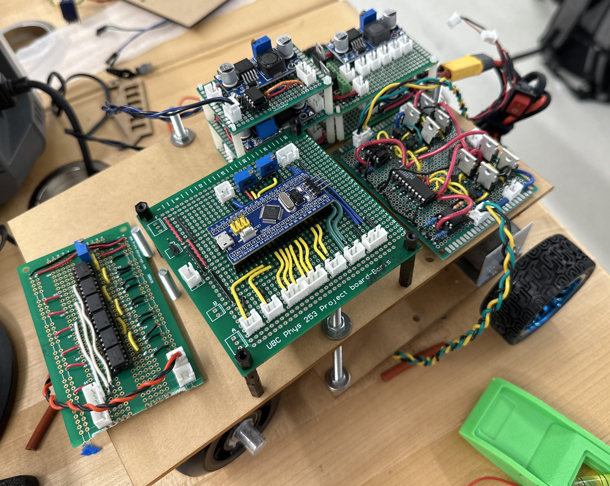

Henrietta Ford
In the summer of 2023, myself and three of my Engineering Physics friends took on the legendary annual EngPhys Robot Summer competition. Over the course of 12 weeks, teams would design and fabricate an autonomous robot to compete in a brand new competition devised by our program's instructors. We took 5 courses in the first 6 weeks while learning about key robot design concepts and considerations, then spent the last 6 weeks prototyping, fabricating, and tuning our robot. It was a lot of fun, work, and here is how our team was able to earn 3rd place.
Interesting Links
CTV News article about our competition.
UBC article about our competition.
Competition Rules
Competition Overview
This year's robot competition was relatively simple with a couple obstacles and twists to make the competition more challenging for us such as a zipline, rocky obstacles, and an IR beacon shortcut. Teams would have 2 minutes to score as many points as possible by completing full laps (3 points per) and picking up coin blocks (1 point per). Teams could also lose points and be reset to the start by picking up a magnetic bomb block. Width of the robots were limited by an archway on the track, but could be bypassed by taking the IR beacon shortcut across a rocky obstacle.
Strategy
We decided to forego these unique options and focus on completing laps quickly by following the tape while picking up a few blocks as we went by. We also initially intended to use the IR beacon to take the shortcut, but as the track developed we figured the rocks over the shortcut would require larger wheels which would reduce our turning responsiveness. The decision was that the value of having a fast, nimble robot was higher than being able to take the shortcut.
Design
Our robot ended up with a few main design requirements. First and foremost, we focused on fast tape following so we could obtain as many points as possible for finishing laps. We also aimed for our robot to have a smooth pickup mechanism which could pickup blocks without the robot going out of its way. Combined with our hopefully fast robot, this should allow us to get ahead of the competition and get access to all the blocks before they could pick them up or knock them away. We were also required by the competition rules have a bumper and collision detection, as two robots getting stuck together would result in a restart where both robots lost all their hard earned laps.
Chassis
We decided to have a preliminary brainstorming session about what our robot would look like and do, and more importantly how it would do that. After a few whiteboard sessions, we
moved to CAD with our rear-engine, rear-wheel-drive car robot. A servo and perpendicular arm with two thrust blocks would steer the robot, while a pair of motors in the back
would propel it forwards. We decided to place the reflectance sensors on the turning arm so they would move with the turning arm simplifying our PID code, and the all of the electrical
components went in the back so we had a space to store blocks from our envisioned sideloading mechanism. Initially we wanted to connect our bumper to some buttons or a switch
for collision detection, but we ended up with a better solution.
Electrical
To begin our electrical design, we brainstormed all of the circuits we would need along with their power requirements. This is what we came up with initially. While this list would continue to evolve as we continued to add new fun features or come across problems, it was pretty close to what we ended up with. It was important for us to create our distance, bomb, and collision detection circuits so we could hit the ground running when it was time for fabrication in the project lab.
Software
Project Planning and Risk Analysis
This was one of my main areas of focus for initial design, along with electrical. I think there is a lot of value in planning out a project by creating a timeline, looking at potential risks and roadblocks, and generally aligning your team so everyone is on the same page. We created a risk matrix to determine areas which could bottleneck our fabrication process or hurt our robot performance and then supplemented it with a flowchart of tasks we needed to finish to achieve a working robot. This planning allowed us to spend less time in the lab when we were already on track, and get a better grasp of how much time we had left.
Fabrication
Before the fabrication process started, we decided to individually focus on parts of the process to avoid overwhelming ourselves. I focused on the electrical parts with my teammate Gabe, and ended up assisting with mechanical design as the fabrication process evolved while the other two teammates. We elected to avoid working on software for the robot since there would be nothing to test it with until we had an initial prototype. The previous soldering experience I had from soldering keyboard switches as a hobby helped me get a head start on the H-Bridge module.
Electrical
Some of the other circuits we made included a hall effect sensor board for detecting the bombs as we drove past them, a power distribution board to connect our battery power with all of the other circuit boards, and
a microcontroller board with JST connectors for all the inputs and outputs. There was also a switch at the bottom of the robot to detect the top and bottom of the ramps so we could change our motor speed and software settings
based on the robot location, and a distance sensor so we could detect robots and obstacles in front of our robot. Some of these were more involved than others, but one of the main things I learned from this process was how
electrical noise could affect our more sensitive circuits, especially the microcontroller. We had to place the H-Bridge circuits away from the microcontroller, twist the wires, and reroute them multiple times to avoid issues with turning.

Chassis and Mechanical Elements
The block collection system we used with a sideloading motor with "sausages" knocking the blocks into the hole in the chassis. We put one on each side, and the blocks were kept in the robot by the motor continuously spinning. This worked really well, allowed us to collect blocks while following the track normally, and looked really cool on the robot. My teammates added a compartment for our batteries, and a beautiful football helmet bumper with some paintbrush bristles to push away the paper which other robots could drop.
Competition
In the 48 hours before the competition, we felt great. Barely worked on the robot, mostly ran it for fun, and worked out all of the kinks in preparation for the competition. The night before the competition, the competition surface was moved
into the location of the competition from the lab. We had to retune the robot for the new darker lighting. Here is the robot running some laps before the competition. Youtube limits clips to one minute, but there is another minute of the robot
doing laps after this. Oh right, we figured out we can cut the initial corner and start the robot with our distance sensor because it was more visually impressive than flicking a switch.
Check out the full run from the pre-competition livestream here.
There were a few issues on competition day, mostly regarding the reflectance sensors. First, the lighting of the room changed between our last test run the night before, and the actual competition itself. Our robot had some issues with staying on the track and nearly went off the surface or got lost a few times. Even with these issues, we were able to progress to the knockout stage with a bit of reflectance sensor tuning. We made it past quarterfinals, but lost in semifinals sending us to the lower finals. In the semifinal round, Henrietta refused to follow the line following a minor collision with the other robot where they got entangled. Unfortunately for us, the reflectance sensors were knocked slightly off the bar when we untangled them, causing her to have trouble reading and following the tape. We fixed this issue for the lower finals and managed to achieve third.
First competition run in Swiss.
Second competition run in Swiss.
Quarterfinals
Semifinals. Very intense run.
Lower Finals
Results and Reflection
Overall, we finished third in the competition. It was a bittersweet competition ending for us, we were happy we did well but felt that Henrietta had much potential. However, the more important part was what we learned. I learned a lot about building and debugging circuits, electrical noise, laser cutting, hand tools, prototyping and design, project planning, and more. It was a lot of work, essentially 10 hours in the lab, 5 days a week upped to 7 days a week closer to the end of the competition but I learned a lot.
I would like to credit and thank my teammates Chayce Ross, Rhiannon Evans, and Gabriel Ravacci for being wonderful, hardworking, and patient people who were a pleasure to work with. They also provided some of the photos for this. The TAs were there for us throughout the fabrication period, helping to fill in the gaps in our knowledge and assist us with problems we struggled with. The ENPH staff shared their immense experience and knowledge with us through their reviews and insights, and supported us throughout the process. I would also like to stay that our fellow competitors/peers/extra teammates were great people to discuss ideas with, and they were all very friendly and sportsmanlike.
Passing
Unfortunately, Henrietta Ford passed away on November 4th, 2023 at the UBC Engineering Open House where she was being showcased by our team on behalf of Engineering Physics. She read a crack between two tables as the tape, and fell off the table in front of a group of spectators where she could not be caught. She suffered a broken hip (chassis), but now she is cryogenically frozen in the lab to be cannibalized by the next cohort of Engineering Physics students or revived when we print a new chassis for her.